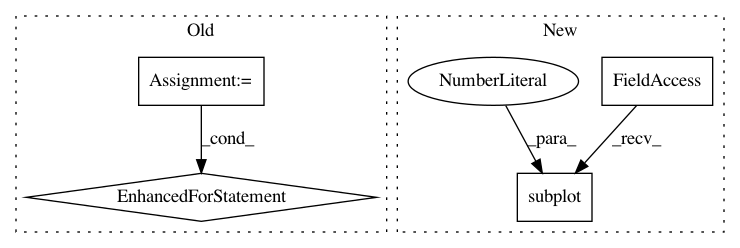

749855e9d1b5bd1aa7b46db144503922fbc0a336,doc/examples/brain_extraction_dwi.py,,,#,8
Before Change
fetch_scil_b0()
dipy_home = pjoin(os.path.expanduser("~"), ".dipy")
files = [dipy_home+"/datasets_multi-site_all_companies/3T/GE/b0.nii.gz",
dipy_home+"/datasets_multi-site_all_companies/3T/Siemens/b0.nii.gz",
dipy_home+"/datasets_multi-site_all_companies/3T/Philips/b0.nii.gz",
dipy_home+"/datasets_multi-site_all_companies/1.5T/GE/b0.nii.gz",
dipy_home+"/datasets_multi-site_all_companies/1.5T/Siemens/b0.nii.gz",
dipy_home+"/datasets_multi-site_all_companies/Stanford/b0.nii.gz"]
for f in files :
print(f)
img = nib.load(f)
data = img.get_data()
fname = os.path.splitext(os.path.splitext(f)[0])[0]
b0_mask, mask = medotsu(data, 4, 4, autocrop=False)
mask_img = nib.Nifti1Image(mask.astype(np.float32), img.get_affine())
b0_img = nib.Nifti1Image(b0_mask.astype(np.float32), img.get_affine())
nib.save(mask_img, fname+"_binary_mask.nii.gz")
nib.save(b0_img, fname+"_mask.nii.gz")
b0_mask_crop, mask_crop = medotsu(data, 4, 4, autocrop=True)
mask_img_crop = nib.Nifti1Image(mask_crop.astype(np.float32), img.get_affine())
b0_img_crop = nib.Nifti1Image(b0_mask_crop.astype(np.float32), img.get_affine())
nib.save(mask_img_crop, fname+"_binary_mask_crop.nii.gz")
nib.save(b0_img_crop, fname+"_mask_crop.nii.gz")
After Change
plt.figure("Brain segmentation")
plt.subplot(1,2,1)
plt.imshow(data[:,:,slice])
plt.subplot(1,2,2)
plt.imshow(b0_mask[:,:,slice])
plt.show()
In pattern: SUPERPATTERN
Frequency: 3
Non-data size: 4
Instances
Project Name: nipy/dipy
Commit Name: 749855e9d1b5bd1aa7b46db144503922fbc0a336
Time: 2013-08-06
Author: matthieu.dumont@usherbrooke.ca
File Name: doc/examples/brain_extraction_dwi.py
Class Name:
Method Name:
Project Name: scikit-image/scikit-image
Commit Name: 25f5729d570c66e4f55cb23a7a41db9382b9015e
Time: 2016-06-19
Author: devel@sciunto.org
File Name: doc/examples/segmentation/plot_thresholding.py
Class Name:
Method Name:
Project Name: nilearn/nilearn
Commit Name: d216af31b527389779d8a0024449b0687e501337
Time: 2012-06-22
Author: alexandre.abraham@cea.fr
File Name: plot_nyu_rest_decomposition.py
Class Name:
Method Name: